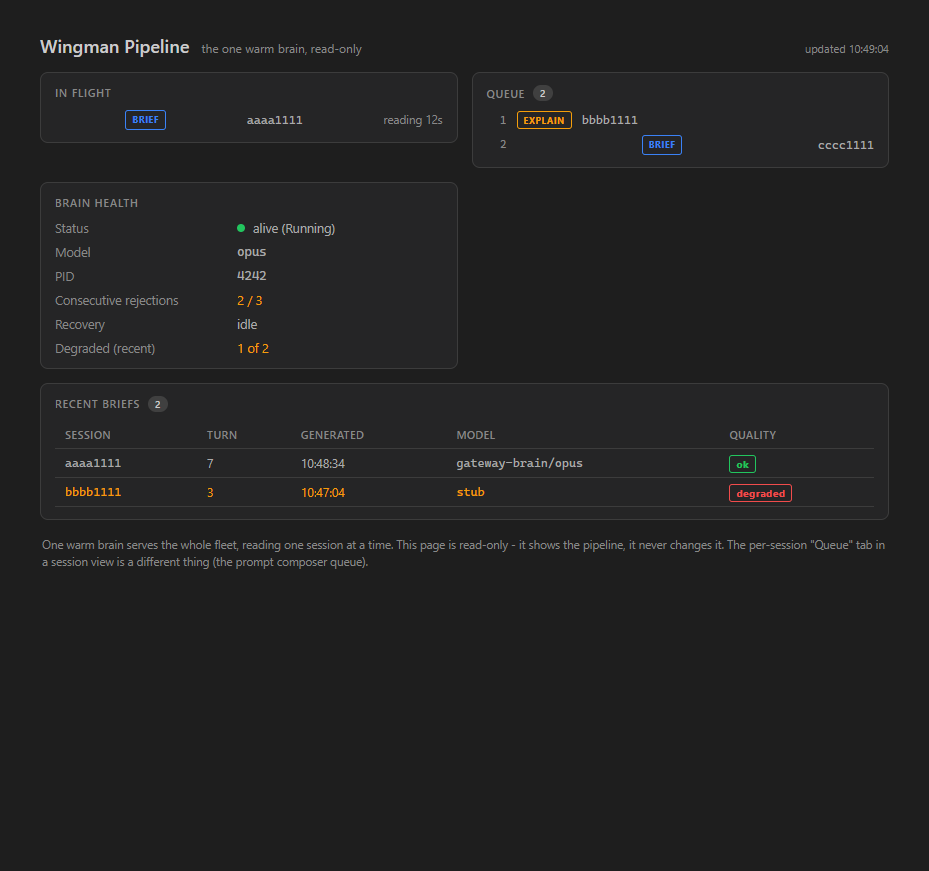

issue-239-wingman-pipelineA read-only fleet-level observability surface for the ONE-brain wingman pipeline, in three layers:
GatewayTurnBriefAgent.QueueSnapshot(...) exposing the live pipeline
(in-flight session + elapsed, ordered queue with brief/explain kind, a bounded last-10 recent-briefs ring,
and the brain's rejection counter + recovery flag) without changing any queue semantics. Added a small
in-memory in-flight start-time map and the recent ring; the existing queue/coalescing/watch-cancel paths are untouched.GET /wingman/queue (Api/WingmanQueueEndpoints.cs), wired in
GatewayHost where _briefAgent + Brain are owned. It reads the agent snapshot
and the brain health; never mutates state. Honest idle/Disabled snapshot when the pipeline is off.WingmanQueueDto (inFlight / queue / recent / brain) + a
GatewayClient.GetWingmanQueueAsync() on the Cockpit./wingman (Components/Pages/WingmanQueue.razor) +
NavMenu entry + app.css styling, rendering the four sections and polling every 3s. Read-only - no mutating buttons.
The per-session right-panel "Queue" tab is untouched (out of scope).Out of scope and NOT changed (per the issue): rail-state honesty / BriefingStateFor / the
BriefingState field; queue ordering / coalescing / watch-cancel / explain priority / brain restart policy;
the per-session prompt "Queue" tab; any historical persistence.
| Criterion | How it is satisfied | Proof |
|---|---|---|
| GET /wingman/queue returns 200 with inFlight / queue / recent / brain | Real endpoint serializes WingmanQueueDto |
Live curl (live-curl-wingman-queue.txt) + endpoint test Get_wingman_queue_returns_200_with_the_snapshot_shape |
| Idle: inFlight null + empty queue | Snapshot is null/empty when nothing pending/in-flight | Live curl shows "inFlight":null,"queue":[]; tests Idle_gateway_..., IdleAgent_ProducesEmptySnapshot |
| Queued + in-flight matches agent _pending/_inFlight/_explainPending | Snapshot reads those exact collections (explains first) | QueuedAndInFlight_SnapshotMatchesPipelineState_AndReadIsSideEffectFree |
| Endpoint is read-only (repeated GETs do not alter state) | Snapshot only reads concurrent dictionaries + a locked ring | Repeated_gets_are_read_only_... + the side-effect-free assertion in the agent test |
| Cockpit page renders the four sections with real data | WingmanQueue.razor renders inFlight/queue/recent/brain | Screenshot below + bUnit render tests |
| Brain-health block shows model + consecutive-rejection count | Brain block renders model and "N / threshold" | Screenshot (opus, 2 / 3) + Brain_health_block_shows_model_and_consecutive_rejections |
| Page updates without manual reload | 3s PeriodicTimer poll re-fetches the snapshot |
PollLoopAsync in WingmanQueue.razor (same pattern as Lists.razor) |
| Endpoint + accessor have unit tests in CcDirector.Gateway.Tests | Snapshot accessor + endpoint integration tests next to GatewayTurnBriefTests.cs | GatewayTurnBriefAgentQueueSnapshotTests (3) + WingmanQueueEndpointTests (3) |
| dotnet build cc-director.sln clean | Full solution build | Build succeeded, 0 Warnings, 0 Errors |
Rendered from the actual WingmanQueue component via a real GatewayClient over a stubbed HTTP
handler returning a populated snapshot. Shows in-flight (BRIEF, reading 12s), the ordered queue (EXPLAIN first, then BRIEF),
the recent briefs (ok + degraded), and the brain-health block (model opus, consecutive rejections 2 / 3, degraded 1 of 2).

See live-curl-wingman-queue.txt: GET /wingman/queue -> HTTP 200 with
{"inFlight":null,"queue":[],"recent":[],"brain":{...,"status":"Disabled",...}} (the honest idle/off snapshot).
DictationEndpointTests.FullPipeline_transcribes_phase0_clip2_with_realtime_provider) is a pre-existing,
environment-dependent realtime-STT test that fails identically on clean main; it is unrelated to this change.No architecture or security drift. The change adds a read-only endpoint + DTO + Cockpit page inside the existing
CcDirector.Gateway / CcDirector.Gateway.Contracts / CcDirector.Cockpit containers
already named in architecture_manifest.yaml. The endpoint inherits the host-wide Gateway token middleware
(auth-gated like every other route); it exposes no secrets (session GUIDs, turn numbers, model name, pid only). No
blocking security rule (DT-01..DT-NN) is touched. No new persistence.